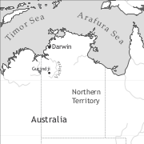

by Felicity Meakins

Gurindji Kriol is a mixed language which is spoken by Gurindji people in the Victoria River District of northern Australia. It is a young language, which only emerged in the 1970s from pervasive code-switching practices. It combines the lexicon and structure of Gurindji, a Pama-Nyungan language, with Kriol, an English-lexifier creole language. A structural split between the NP and VP can be observed, with Gurindji contributing the NP structure including case-marking, and the VP structure including TAM auxiliaries coming from Kriol. Related mixed varieties are spoken by Ngarinyman and Bilinarra people in the same region. These varieties are similar but draw on Ngarinyman and Bilinarra, which are closely related to Gurindji (all three belong to the Ngumpin-Yapa subgroup of Pama-Nyungan). These traditional Australian languages are highly endangered and the maintenance of them within the mixed language varieties can be seen as the perpetuation of Aboriginal identity under massive and continuing cultural incursion.
Gurindji Kriol originated from contact between non-indigenous colonists and the Gurindji people. From 1855 onwards, the traditional lands of the Gurindji and neighbouring groups were seized by colonists who were searching for good cattle pastures. After initial attempts to cull the original inhabitants, cattle stations were set up and the remaining Gurindji people were brought to work on the stations in slave-like conditions with other Aboriginal groups (Hardy 1968; Wavehill 2000; Berndt & Berndt 1948; Rose 1991, 2000). In 1966, the Gurindji initiated a workers’ strike to protest against their poor conditions of employment and ultimately regain control of their traditional lands. Their campaign went on for nine years and resulted in the first successful land claim by an Aboriginal group in Australia (Hokari 2000, 2002; Berndt & Berndt 1987). Today the Gurindji continue to live on their traditional lands in two main communities – Kalkaringi and Daguragu.
The linguistic practices of the Gurindji are closely tied to these social circumstances. Before colonization, the Gurindji were multilingual, speaking the languages of neighbouring groups with whom they had familiar and ceremonial connections. The establishment of the cattle stations by colonizers saw the introduction of the cattle station pidgin and later Kriol into the linguistic repertoire of the Gurindji. In the 1970s, McConvell (1988) observed that code-switching between Kriol and Gurindji was the dominant language practice of Gurindji people. It is likely that this code-switching and a certain amount of levelling between Gurindji and closely-related neighbouring languages such as Ngarinyman and Bilinarra provided fertile ground for the formation of the mixed language. At this time, similar changes to local linguistic ecologies occurred in other places in northern Australia, with Kriol becoming the dominant language in many areas such as Timber Creek and Katherine. Yet in Kalkaringi, a mixed language emerged from this situation (McConvell & Meakins 2005; McConvell 2002, 2008; Meakins 2011a). Meakins (2008b: 86–87) argues that maintenance of Gurindji elements in the mixed language relates closely to the land rights movement and can be considered an expression of the persistence of their ancestral identity. Additionally McConvell suggests that the homogeneity of the linguistic situation (one traditional language spoken at Kalkaringi) may have also aided the maintenance of Gurindji.
The post-contact language situation has developed in a number of ways. Although Gurindji is the traditional language of Kalkaringi and the surrounding area, Gurindji Kriol is now the main language spoken in Kalkaringi, and the first language of all Gurindji people under 35 years of age. Gurindji Kriol has little social prestige compared with Gurindji. Older people generally describe it in terms of the loss of Gurindji, and complain that the younger generations do not speak Gurindji correctly. Younger people view it as “their” language and emphasize the Gurindji component. To outsiders it is usually called “Gurindji” by all generations. The term “Gurindji Kriol” has little currency in the community, and it is rarely used to denote the mixed language. If a distinction between Gurindji and Gurindji Kriol is required, Gurindji is usually referred to as “hard Gurindji”, “rough Gurindji” or “proper Gurindji”, and Gurindji Kriol as “Gurindji”. The term “Gurindji”, it seems, is a relative term used to signify the main language used by the community rather than a particular language form (Meakins 2008b: 84, 2012:109).
Despite the dominant use of Gurindji Kriol at Kalkaringi, the picture is far from monolingual. Gurindji Kriol is situated within a complex picture of multilingualism, contact and code-switching. Gurindji continues to be spoken by older people, and a neighbouring traditional Australian language, Warlpiri, is also used by people of Warlpiri heritage. Standard Australian English is the language of government services and the school, though its use is generally restricted to these domains. Kriol and Aboriginal English are spoken with Aboriginal visitors from other communities (Meakins 2008a). In this respect, Gurindji Kriol continues to be spoken alongside Gurindji and Kriol, and is a ‘symbiotic’ mixed language. In addition, code-switching continues to be an everyday practice at Kalkaringi, and it is common to find code-switching between Gurindji and Kriol, and between Gurindji Kriol and its source languages.
The phonological system of Gurindji Kriol is stratified, i.e. it has maintained separate Gurindji and Kriol phoneme inventories, syllable structures and phonological processes. The phonological systems of Gurindji and Kriol are quite similar, no doubt because the cattle station pidgin developed in the Victoria River District area under the influence of Gurindji. Nonetheless differences are apparent and the stratification is perhaps the result of Gurindji Kriol’s symbiotic relationship with its source languages. The continuing contact with the source languages has aided the maintenance and separation of the two phonological systems.
|
Table 1. Vowels |
|||
|
front |
central |
back |
|
|
close |
i |
u |
|
|
mid |
e |
o |
|
|
open |
a |
||
In terms of vowels, Gurindji Kriol has a 5 vowel system. All Gurindji words contain only 3 vowel phonemes [i], [a] and [u] with diphthongs being the result of combinations of vowels with glides in fast speech, for example [awu] > [au]. Kriol words make use of five vowel phonemes: [e] and [o] in addition to [i], [a] and [u]. There is more overlap between the two languages in the consonant inventory. Gurindji and Kriol source words share most consonants and no voicing distinction is made. Fricatives are only present in Kriol-derived words and these are used in variation with the plosive series.
|
Table 2. Consonants |
|||||
|
bilabial |
alveolar |
retroflex |
palatal |
velar |
|
|
plosive |
p |
t |
rt |
j |
k |
|
fricative |
f |
s |
sh |
||
|
nasal |
m |
n |
rn |
ny |
ng |
|
lateral |
l |
rl |
ly |
||
|
tap |
rr |
||||
|
glide |
r |
y |
w |
||
Stress is word initial for words of both Gurindji and Kriol origin. The maintenance of the two phonological systems is more obvious in syllable structure. A range of structures are permissible in words of both origins, e.g. CV and CVC; however, VC syllables are only allowed in Kriol words. Gurindji and Kriol source words also diverge in their use of stop-final consonant clusters. Gurindji words allow syllable-final consonant clusters, though the cluster combination is rather restricted. The first consonant must be a liquid, and the final consonant must be a non-coronal stop or velar nasal. Even in the more acrolectal forms of Kriol words, final consonant clusters are never present at the surface level. Finally, different phonological processes apply to the different component languages of Gurindji Kriol. For example, in Kriol words, the plosive series is occasionally hypercorrected to fricatives of a similar place of articulation. This process never occurs in words of Gurindji origin.
The Gurindji Kriol noun phrase consists of a head plus a number of potential modifiers. Potential heads are nouns, nominalized adjectives, emphatic pronouns and demonstratives; and modifiers are determiners ((in)definite, plural/singular) and adjectives. Heads and modifiers can be distinguished by their ability to take case marking. Heads are case-marked, and modifiers are not. The order of noun phrase constituents is relatively fixed. Where a determiner is present, it precedes the head. Other modifiers may precede or follow the head, though they tend to precede the head. Discontinuous NPs are also possible in Gurindji Kriol. Note that in all examples, Kriol-derived words are underlined, and Gurindji-derived words are not underlined.
(1) Det yapakayi karu-ngku i bin gon ged-im-bat det karu.
def.det small child-erg 3sg.sbj pst go get-tr-prog the child
‘The small kid goes to get the (other) kid.’ (SE:FM019.A: Narrative)
|
Table 3. Nominal suffixes |
|||||
|
|
form |
origin |
type |
form |
origin |
|
ergative |
-ngku, -tu |
< G |
privative |
-murlung |
< G |
|
locative |
-ngka, -ta |
< G |
comparative |
-marraj |
< G |
|
dative |
-yu, -wu, -ku, -yu |
< G |
inchoative |
-k |
< G |
|
allative |
-ngkirri, -jirri |
< G |
agentive |
-kaji, -waji |
< G |
|
ablative |
-nginyi |
< G |
alone |
-rayinyj |
< G |
|
comitative |
-yawung, -jawung |
< G |
focus |
-na |
< K |
|
plural |
-rrat |
< G |
topic |
-ma |
< G |
|
dual |
-kujarra |
< G |
only |
-rni |
< G |
|
paucal |
-walija |
< G |
another |
-kari |
< G |
|
associative plurals |
-nganyjuk, -purrupurru, -kuwang, -mob |
< G, < K |
nominalizer |
-ny, -wan |
< G < K |
Gurindji Kriol contains many nominal suffixes, most of which are derived from Gurindji. These include case suffixes, number marking and derivational morphology. A number of these suffixes have Kriol-derived periphastic counterparts. For example the privative suffix -murlung can also be expressed by gat no (‘has no’).
|
Table 4. Personal pronouns and adnominal possessives |
||||
|
subject |
object |
emphatic pronouns |
adnominal possessives |
|
|
1sg.excl |
ai |
ngayu |
ngayu |
ngayiny |
|
1sg.incl |
wi |
ngali |
ngali |
|
|
1pl.incl |
wi |
ngaliwa |
ngaliwa |
ngaliwany |
|
1pl.excl |
wi |
ngantipa |
ngantipa |
ngantipany |
|
2sg |
yu |
yu |
nyuntu |
nyununy |
|
2du |
yutu(bala) |
yutu(bala) |
||
|
2pl |
yumob |
yumob |
nyurru(lu) |
nyurruluny |
|
3sg |
i |
im |
nyantu |
nyanuny |
|
3du |
tu(bala) |
tu(bala) |
||
|
3pl |
dei |
dem |
nyarru(lu) |
nyarruluny |
|
refl |
mijelp |
|||
Regular pronouns distinguish person (1st, 2nd and 3rd) and number (singular, dual and plural), and further make a distinction between inclusive and exclusive 1st person pronouns, though syncretism exists between subject forms. All subject pronouns are derived from Kriol and object pronouns find their origins in both languages. A general reflexive/reciprocal pronoun is derived from the Kriol reflexive pronoun. Emphatic pronouns are derived from Gurindji and are classified as nominals because they can be case-marked. Possessive pronouns are drawn from Gurindji and are also used as dative objects, e.g nyununy (‘your', 'to you’). An example of a sentence containing three categories of pronouns:
(2) An ngantipa-ngku wi tok bo ngantipany karu na.
and 1pl.incl-erg 1pl.sbj talk dat 1pl.incl.dat child foc
‘And now it’s us that talk to our children.’ (VB:FM060.B:Conversation)
Possessive relationships in Gurindji Kriol are marked with the Gurindji-derived dative marker which is suffixed to the dependent (possessor) or a dative pronoun. Inalienable nominals (body parts and kinship) are optionally marked dative (Meakins & O’Shannessy 2005).
(3) Wartarra yu bin kirt det ngakparn-ku hawuj.
goodness 2sg pst break the frog-dat home
‘Goodness me you broke the frog’s home (the bottle).’ (CA:FM054.C:Frog story)
The verb phrase consists of a tense auxiliary1 followed by a modal auxiliary2 and the main verb3. The auxiliary verbs are derived from Kriol and the main verb can come from either Gurindji or Kriol:
(4) I bin1 labta2 ged-im3 im nyanuny mami-ngku na.
3sg.sbj pst mod get-tr 3sg.obj 3sg.dat mother-erg foc
‘His mother had to get him.’ (SS:FM009.B:Narrative)
Gurindji Kriol distinguishes between past (bin) and present tense (zero-marked) and marks future time using a potential marker (garra) which is also used to express obligation. Many of the auxiliaries also have clitic forms which attach to subject pronouns, such as ai-rra < ai garra (‘I will’).
|
Table 5. Tense-Aspect-Mood auxiliaries |
|||
|
category |
form |
English etymon |
function |
|
tense |
bin, -in |
been |
past |
|
-m |
I’m, am |
present progressive |
|
|
-l |
I’ll, will |
future |
|
|
aspect |
olweis |
always |
present habitual |
|
yusta |
used to |
past habitual |
|
|
til |
still |
progressive |
|
|
stat |
start |
inceptive |
|
|
modal |
garra, -rra |
got to |
potential |
|
beta |
had better |
necessative |
|
|
habta, labta |
have to |
necessative |
|
|
kan |
can |
ability |
|
|
shud |
should |
possibility |
|
|
traina |
trying to |
attempt |
|
|
wana, -na |
wanna, want to |
desire |
|
|
voice |
Ø |
active |
|
|
git |
get |
passive |
|
|
negation |
don |
don’t |
imperative |
|
kaan |
can’t |
ability/permission |
|
|
neba |
never |
simple negation |
|
|
top |
stop |
imperative |
|
|
not |
not |
simple negation |
|
Bound verbal morphology is also predominantly Kriol-derived. For example, Gurindji Kriol has adopted a set of adverbial suffixes from Kriol. These suffixes originally find their origins in English phrasal verbs and only attach to verbs of Kriol origin. They have four functions: (i) literal markers of space, (ii) markers of the aktionsart distinction of telicity, (iii) aspectual markers which create telic verbs from activity verbs and (iv) create a verb with an idiosyncratic meaning. Most adverbial suffixes perform more than one function, for example -ap (up) can be used to mark either of the four functions. Other verbal suffixes include the Kriol-derived transitive suffix. Unlike in other Pacific creoles, the transitive marker is lexicalized in Gurindji Kriol (it does not derive transitive verbs from intransitive verbs). Gurindji Kriol also contains a set of progressive suffixes whose use is determined by the language of the stem and transitivity as shown in Table 6.
|
Table 6. Verb suffixes |
||||
|
category |
form |
English etymon |
function |
examples |
|
adverbial suffixes |
-abat |
about |
idiosyncratic |
wokabat (‘walk about’) |
|
-abta |
after |
idiosyncratic |
lukabtaim (‘look after’) |
|
|
-an |
on |
spatial suffix on activity verbs of manipulation, inceptive marking of activity verbs of motion |
wirriman (‘get dressed’), guan (‘go away!’) |
|
|
-ap |
up |
space suffix, also marks telic verbs of goal or accomplishment |
liptimap (‘lift’), filimap (‘fill completely’), kamap (‘arrive’) |
|
|
-(a)ran |
around |
space suffix on activity verbs of motion |
lukaran (‘look around’) |
|
|
-(a)wei |
away |
space suffix on activity verbs of motion |
ranawei (‘run away’) |
|
|
-at |
out |
marks telic verbs (general meaning of outward) |
meltimat (‘melt’), jingat (‘call out’), lukat (‘look at’) |
|
|
-bek |
back |
space suffix, also creates telic verbs from activity verbs of manipulation and movement or creates them from activity verbs |
lukbek (‘look back’), putimbek (‘rewind’), kombek (‘return’), gubek (‘return’), teikimbek (‘return’) |
|
|
-dan |
down |
literal space suffix meaning ‘down’ |
baldan (‘fall’), nokimdan (‘knock over’), putimdan (‘put down’) |
|
|
-oba |
over |
space suffix, also creates telic verbs from activity verbs of manipulation and motion |
jampaoba (‘jump over’), muboba (‘move over’) |
|
|
-op |
off |
creates telic verbs from activity verbs of manipulation and motion (completed downward motion) |
tarnop (‘turn off a road’), gedop (‘get out of a car’) |
|
|
progressive suffixes |
-in |
ing |
lexicalized (only four Kriol verb stems) |
tok (‘talk’), kam (‘come’), jing (‘call’), luk (‘look, see’) |
|
-bat |
about |
attaches to Kriol transitive verbs |
kilim-bat (‘hitting’) |
|
|
-karra |
< Gurindji |
attaches to in/transitive Gurindji verbs and intransitive verbs |
makin-karra (‘sleeping’), ngalyakap-karra, jidan-karra (‘sit’) |
|
|
-ta |
< Gurindji |
attaches to intransitive Gurindji and Kriol verbs |
pleibat-ta (‘play’), makin-ta (‘sleep’) |
|
|
transitive suffix |
-im |
him, them |
lexicalized, only marks transitive Kriol verbs |
kilim (‘hit’) |
Gurindji Kriol lacks a copula verb; therefore it is difficult to distinguish verbless clauses from simple noun phrases. Here they are identified by the presence of a co-referential subject pronoun. Ascriptive clauses consist of a subject noun and nominalized adjective (see ex. 5) and existential clauses contain a subject with locative phrase (see ex. 6).
(6) Det warlaku im andanith jiya-ngka.
the dog 3sg underneath chair-loc
‘The dog is underneath the chair.’ (RO:FHM005:Elicitation)
A verbal clause consists of a predicate, the verb, and elements which serve one of three grammatical relations: argument (subject, object, indirect object), adjunct and complement (non-obligatory but restricted to particular verbs e.g. proprietive-marked nominals with verbs of hitting or allative-marked goals with verbs of locomotion). Intransitive clauses consist of a verb and a subject with no object. Adjuncts may be added to express the location or time of an action. Subjects are generally not case-marked, though ergative case marking is occasionally used in discourse prominent structures (e.g. 8).
(7) Warlaku i=m makin atsaid shop-ta.
dog 3sg.sbj=prs.prog sleep outside shop-loc
‘The dog, it sleeps outside the shop.’ (LS:FHM066:Elicitation)
Transitive clauses consist of an optionally-ergative marked subject (66.5%) and an absolutive object. Word order is predominately SVO (87.6%) and the ergative marker is more likely to appear when the agent nominal is postverbal (Meakins 2009; Meakins & O’Shannessy 2010).
(8) An kengkaru i bin kil-im kurrupartu-yawung det karu-ngku.
and kangaroo 3sg.sbj pst hit-tr boomerang-com the child-erg
‘And the kangaroo he hit with a boomerang, the child did.’ (AC:FHM082: Elicitation)
Semi-transitive clauses are composed of an optionally-ergative marked subject and a dative object. Speech and perception verbs most commonly form semi-transitive clauses. The dative object is most often marked by a dative preposition bo (< for) but also a dative case marker, or it can be double-marked.
(9) Naja-wan kajirri jing-in-at-karra bo nyanuny karu.
another-nmlz old.woman call.out-prog-out-prog dat 3sg.dat child
‘Another old woman calls out to her child.’ (CA:FHM027:Elicitation)
A small group of ditransitive clauses also exist which are usually headed by a “give” type verb. These clauses include an accusative object and dative indirect object, and alternate with a clause with two accusative objects. The most common type of ditransitive clause is the double accusative. In these constructions the direct object follows the indirect object, as in (10). The order of the objects is reversed in the dative variant of the ditransitive, shown in (14).
(10) Det malyju gib-it det man jumok.
the boy give-tr the man cigarette.
‘The boy gives the man a cigarette.’ (AC:FHM002:Elicitation)
Finally get-passive clauses consist of an auxiliary verb git (< get) and the loss of the transitive marker from the main verb. The agent also loses ergative case marking as an adjunct and acquires ablative case instead.
(11) Man i bin git bait warlaku-nginyi wartan-ta.
man 3sg.sbj pst get bite dog-abl hand-loc
‘The man got bitten by a dog on the hand.’ (LS:FHM069:Elicitation)
Conjoined clauses are often zero-marked, like the following sentence, which was uttered within one prosodic contour. The link between the clauses is implied.
(12) Warlaku i=m lungkarra-karra nganta
dog 3sg.sbj=prs.prog cry-prog dub
i-m tai-im-ap nyantu kuya nek-ta.
3sg.s-prs.prog tie-tr-up 3sg thus neck-loc
‘The dog is crying (because) he tied him up by the neck like that.’ (RR:FM052.C:Narrative)
A number of Kriol-derived conjunctions can be used to join verbal or nominal clauses such as an (‘and’) and o (‘or’). Others are only used to relate verbal clauses such as dumaji (‘because’), bikos (‘because’), bat (‘but’), ib (‘if’), den (‘then’). All but dumaji are found clause-initially.
(13) Dat marluka bin trai jidan jiya-ngka bat i bin kirt.
the old.man pst mod sit chair-loc but 3sg.sbj pst break
‘The old man tried to sit on the chair but it broke.’ (CE:FHM121:Elicitation)
Subordination is mostly performed by marking the verb in the subordinate clause with a case-marker. This style of subordination is derived from Gurindji. For example, the locative marker can be used in a switch reference construction to indicate that the agent of the subordinate clause is the same as the object of the main clause.
|
Table 7. Conjunction and subordination |
|||
|
category |
form |
English etymon |
function |
|
conjunction |
dumaji |
too much |
|
|
bikos |
because |
||
|
an |
and |
||
|
bat |
but |
||
|
den |
then |
||
|
ib |
if |
conditional |
|
|
o |
or |
||
|
lunguj |
as long as |
at least |
|
|
subordination |
locative |
matches agent of subordinate clause with object of main clause |
|
|
progressive |
matches agent of subordinate clause with object of agent clause |
||
|
dative |
purposive and benefactive clauses |
||
|
ablative |
marks action in subordination clause as occurring before main clause |
||
|
wen |
matches agent of subordinate clause with object of main clause |
||
Gurindji Kriol also contains asymmetrical serial verb constructions (Meakins 2010). There are three potential parts to the asymmetrical serial verb construction: auxiliary1, minor verb2 and main verb3.
(15) I garra1 put-im2 makin3 yard-ta.
3sg.sbj pot put-tr lie.down yard-loc
‘He will lay him down in the yard.’ (CR:FM054.B:Narrative)
The minor verb is derived from Kriol and is a closed class consisting of 15 verbs. Minor verbs have a number of different functions. They can be used to (i) change the aspectual properties of a clause, (ii) change the transitivity of the clause, (iii) give information about path and direction of actions, and (iv) modify the semantics of the main verb. For example, in (15) putim introduces an unexpressed object argument and indicates a caused change in locative relation.
|
Table 8. Minor verbs and asymmetrical serial verb constructions |
|||
|
form |
meaning as main verb |
function |
combines with… |
|
baldan |
fall |
change of position |
verbs of position and manner |
|
garram |
have |
possession |
verbs of position and manner |
|
gedim |
get |
obtainment |
verbs of manner |
|
gon/gu |
go |
move/extend along a path, decrease valency |
dynamic transitive or intransitive verbs |
|
holdim |
hold |
physical possession |
verbs of position and manner |
|
kam |
come |
towards deictic centre |
dynamic transitive or intransitive verbs |
|
kilim |
hit |
general impact |
verbs of manner of hitting and position of impact on body |
|
kipgon |
keep on |
durative |
dynamic transitive or intransitive verbs |
|
kipim |
hold |
possessive |
verbs of position in relation to body |
|
ledim |
let |
permissive |
unrestricted |
|
meikim |
make |
causative |
unrestricted |
|
putim |
put |
causative, manipulation, transitivizer |
verbs of position and manner |
|
teikim |
carry |
accompanied motion |
verbs of position in relation to body and manner of motion |
|
tok |
talk |
talking |
verbs of talking |
|
top |
be |
continuous action |
intransitive verbs |
Although Gurindji Kriol exhibits a structural split between the NP (Gurindji) and VP (Kriol) systems, nouns and verbs can be derived from either language. Kriol dominates with 64% of verbs and 67% of nouns deriving from this language. Other word classes are drawn entirely from one language as Table 9 demonstrates (Meakins 2012:111).
|
structural feature |
language of origin |
lexical feature |
language of origin |
|
word order |
N - body parts |
mostly Gurindji |
|
|
TAM markers |
N - colours |
||
|
bound verbal morphology (see Table 6) |
N - artefacts |
traditional (Gurindji), new (Kriol) |
|
|
case morphology |
Gurindji |
N - people |
mixed |
|
other nominal morphology (see Table 3) |
Gurindji |
N - kin |
parents and their siblings (Kriol), siblings, grandparents, in-laws (Gurindji) |
|
negation |
N - food |
mixed |
|
|
regular pronouns |
Kriol and Gurindji |
N - plants |
mostly Gurindji |
|
emphatic pronouns |
Gurindji |
N - animals |
mixed |
|
possessive pronouns |
Gurindji |
V - state |
mixed |
|
interrogative pronouns |
V - motion |
mostly Gurindji |
|
|
demonstratives |
‘this/that’ (Gurindji), ‘here/there’ (Kriol), ‘thus’ (Gurindji) |
V - bodily functions |
Gurindji |
|
determiners |
V - impact |
Gurindji |
|
|
conjunctions |
coordination, relative pronouns (Kriol), subordination (Gurindji) |
V - basic e.g. do, make, hit, talk, go, take, put |
|
|
interjections |
Gurindji |
V - vocalizing |
mixed |
|
directionals (cardinals, ‘up/down’) |
Gurindji |
numerals |
|
In general, there is a large pool of synonyms in the language where Gurindji and Kriol forms both exist. Some lexical specialization can be noted, for example karnti, which means ‘branch’, ‘stick’ or ‘tree’ in Gurindji, is generally only used to mean ‘branch’ or ‘stick’ in Gurindji Kriol, whereas the Kriol form tri is used to mean ‘tree’. Other synonymous forms are used interchangeably, depending on a number of sociolinguistic factors including group identification and the age of the addressee. For example, the Gurindji form tipart (‘jump’) may be chosen if the speaker is addressing an older person, whereas the Kriol form jam may be used in conversation with peer groups or younger people (Meakins & O’Shannessy 2005: 45).